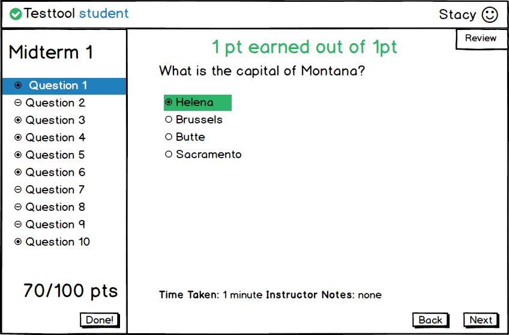
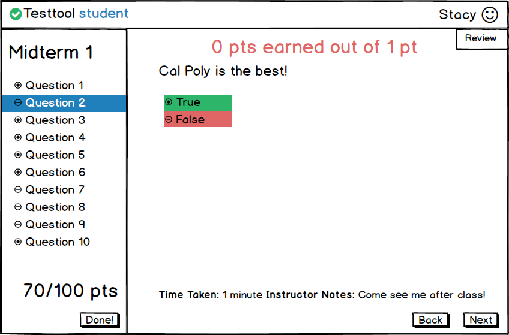

2.5.4 Reviewing a Test
When the student selects Review in the Student home screen, the system displays the screen below in Figure 2.5-7.
This answer is correct so the answer is highlighted in green

Figure 2.5-7: Review Taken Test Screen.
Sketch of the remainder:
-
The student can see how many points they received in the bottom left of the screen
-
The student can see which questions they got right and wrong next too each question
- filled in circle for correct
- dash for incorrect
-
The student can go to the next question by clicking Next
-
The student can go to the previous question by clicking Back
-
The student can click Done! to return to the main student screen
-
The student can see what the question was worth
-
The student can submit their test for grading by clicking Done!
-
If the answer the student submitted was incorrect, the student would see the image below in Figure 2.5-8.
When the student reviews a question that they get incorrect, the correct answer is shown in green and their answer is shown highlighted in red.

Figure 2.5-8: Reviewing an incorrect answer.
Prev: test-view
| Next: instructor-test
| | Top: index